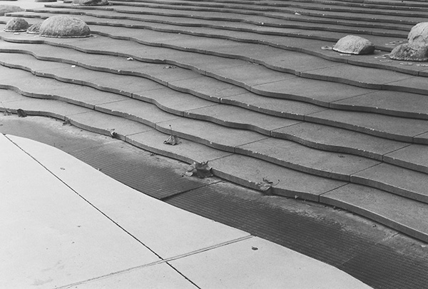

Julianna showed me a photo of a very cute cat. Its eyes are different colors which are blue and green, and the snow-white fur makes it a unique cat. When I first saw the picture, I wondered if it was her cat. It turns out it’s not. She just thought it was super cute and wanted to take a photo of it. The most mysterious part of the image is how Julianna happened to take a picture of this random cat in public, yet the cat’s eyes almost seem like they’re trying to say something to her, something we can’t quite understand. One suggestion I would give to make the photo even more interesting is to try using a portrait effect, focusing on the cat while keeping the background softly blurred. That would make the cat stand out more.

Copyright 2025 Thi Anh Thu Dao
This photo was taken when I got my first film camera. I chose black and white film because I thought it would be interesting to see the world in a different way. I took the photo where I live, in downtown my city. At first glance, the photo seems quiet, but there are actually lots of people walking around, since it’s a busy area. The leaves look still in the image, but they were actually moving in the wind. Using a film camera made the process especially exciting, as I couldn’t wait to see the results after the film was developed. The outcome was quite satisfying. The topic that I chose was about seeing myself through film photography, particularly through how I view the world through the lens. While the world keeps evolving and staying busy, I look for calmness and quiet. The image tells a story about me being somewhat isolated from the people around me as I like to immerse myself in my surroundings and observe them.
Learning Journal 3: Visual Thinking
Thi Anh Thu Dao
Whenever I look at an image, I usually find it easy to tell what it’s about until I read the article “10 Intriguing Photographs to Teach Close Reading and Visual Thinking Skills.” The article introduced the idea that certain photographs can make viewers pause and really think about what’s happening in the image. It’s not just about saying what you see but about backing it up with evidence from the image. This method of close reading is a great way to practice visual thinking skills. I personally connect with this idea because I often spend more time looking at visuals than reading lengthy texts. I tend to learn faster through images, and I genuinely enjoy photographs that tell a story or carry emotions that spark my curiosity to explore more.
The site I found most interesting is Jointe. By studying the site for a moment, I could tell it’s a company that makes hardscape products, but what really stood out to me was how clean and modern everything looks. They have plenty of photos that show different materials in really intriguing ways. Their photos are mostly close-up shots that focus on the materials and their textures. I love how the site adds small interactions like when you scroll or hover, the images zoom out a bit so you can see the texture better. It’s a simple but smart way to make viewers feel more connected to the product. The mix of symmetrical and asymmetrical photos also gives the page a calm, balanced vibe that feels really nice to look at.
Learning Journal 2: Overlays
Thi Anh Thu Dao
The article Overuse of Overlays: How to Avoid Misusing Lightboxes gives me a better understanding of when and how overlays should be used in design. Overlays need to be used thoughtfully depending on the context and the user’s needs. I have seen overlays pretty much on desktop screens. Using overlays on smaller screens like mobile might require designers to make them appropriately display without disorienting the users.
The examples in the article really helped me see how small design choices can make a big difference in the user experience. For instance, when Whitenton mentioned Apple removing its help overlay and turning it into a full page instead, it made sense when users don’t want the overlay to interrupt but still be a sharable page. A simple page layout often feels more natural and easier to navigate than a pop-up that interrupts the flow. Sometimes designers get too comfortable using overlays as shortcuts, even when a regular page would work better. I think overlays only make sense when they serve a real purpose like reminding users about the consequences of their actions or collecting quick information.
I remembered the first time I experienced overlays on a New York Times article. The overlay kept popping up and blocked me from reading the content. At first, it frustrated me because it felt like the site didn’t want me to see the article. But then I realized that it was meant to encourage subscriptions, which was also part of their business model.
Learning Journal 1: Form Design
Thi Anh Thu Dao
The article Best Practices for Form Design got me thinking more about form design. Whenever I have to fill out a form, either a digital or paper one, I notice there are many fields to be filled out. They often leave me feeling overwhelmed, and I end up quitting before finishing the form. However, I’ve noticed that form design has improved a lot. Instead of one lengthy form, it now comes in different steps, which makes it easier to keep track of the filling process.
For practice number 5, I could understand why we have to mark required fields even though most of them are required. It might seem redundant, but it is extremely helpful to avoid confusion. Personally, I often check for asterisk-marked fields and make sure they are all filled in. Without the “optional” label, I still understand that a field without an asterisk is optional. Still, whether there are optional labels or not, it’s never redundant for some people who are not accustomed to forms.
I also face the same issue when encountering inline labels. It’s more confusing than helpful to me. Inline labels disappear right after I type in my input, and then I forget what the field is for. I believe the best practice is to put the label above the field. It does not take up much space as many others think and still makes it clear.
The website I have interacted with that exemplifies best practices is the BenefitsCal website, which I used when applying for Calfresh. The application process was straightforward. It comes with a total of nine steps that clearly tell users how far they have progressed. It starts with instructions on how to fill it out, explaining that fields marked with “required” are mandatory to complete, while the others are considered optional.